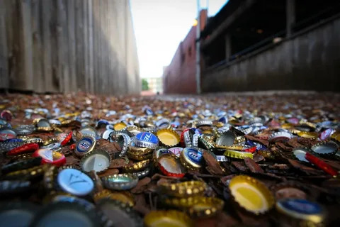

Kronkorken - Umweltproblem

Allein durch den hohen Bierkonsum in Österreich wurden im Jahr 2022 rund 971 266 422 Kronkorken auf Flaschen gesetzt, um diese luftdicht zu verschließen. Kronkorken bestehen größtenteils aus Weißblech. Genauso wie andere Schraubgläser Deckel und Konservendosen. Dabei setzt sich das Weißblech aus Stahlblech in der Grundstruktur und einer Zinnschicht als Rostschutz zusammen. Recycling von diesem Material ist vollständig möglich, was wiederum mehr als die Hälfte der Energie spart. Aus recyceltem Material produziert, sinkt der Energieverbrauch dabei um rund 60 Prozent. Auch die Luftbelastung verringert sich in etwa um 30 Prozent. Die natürlichen Ressourcen Zink und Eisen müssen somit auch deutlich weniger abgebaut werden.